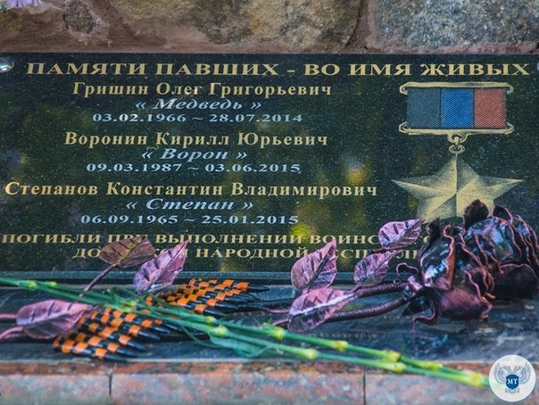

Как сообщает официальный сайт ГП «Донецкая железная дорога» 27 сентября состоялось торжественное открытие мемориальной доски героям – работникам локомотивного депо Ясиноватая ГП «ДЖД», отдавшим свои жизни за свободу и независимость Донбасса.
В церемонии торжественного открытия мемориальной доски приняли участие представители ГП «Донецкая железная дорога», общественных организаций, коллектив локомотивного депо Ясиноватая, родственники и коллеги погибших, а также жители и гости города.